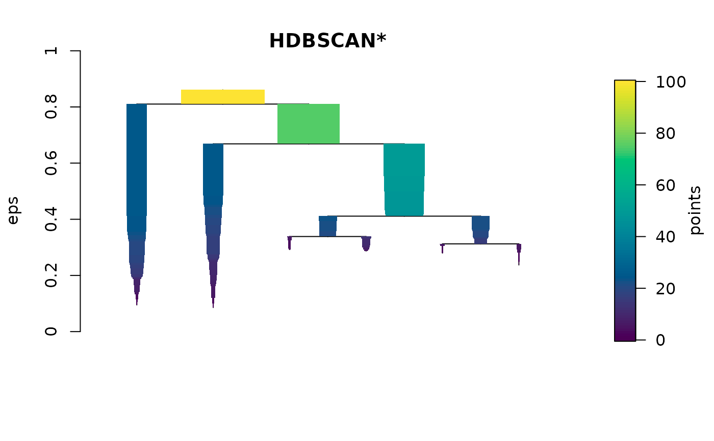
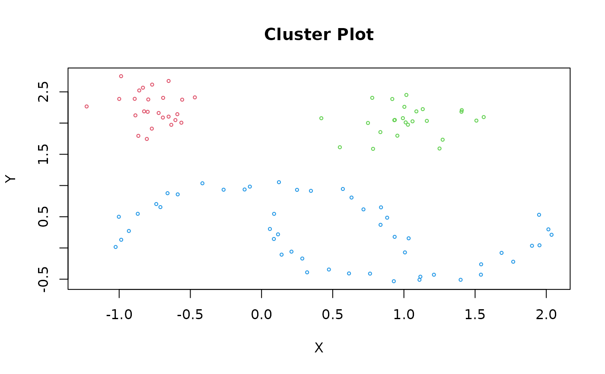
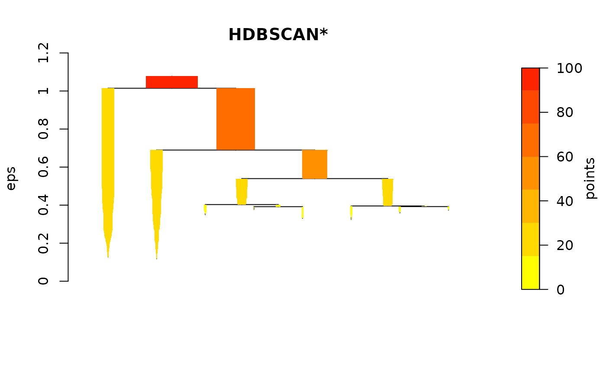
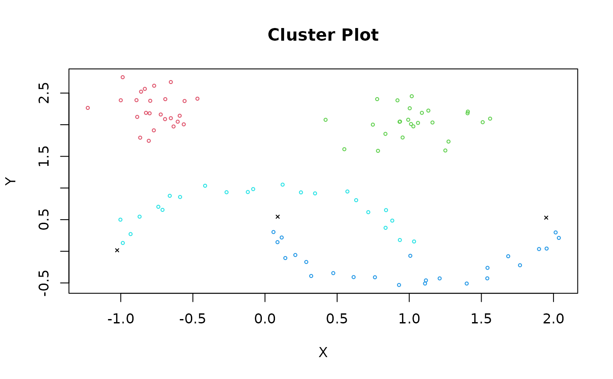
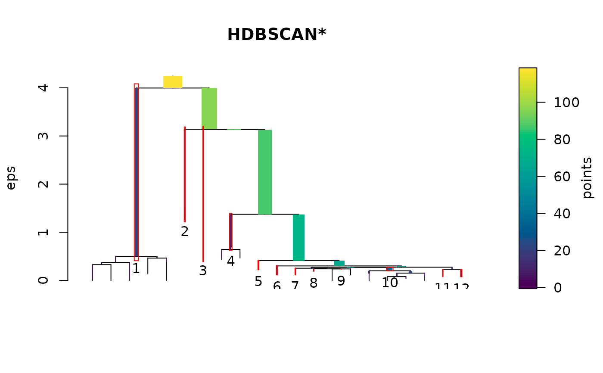
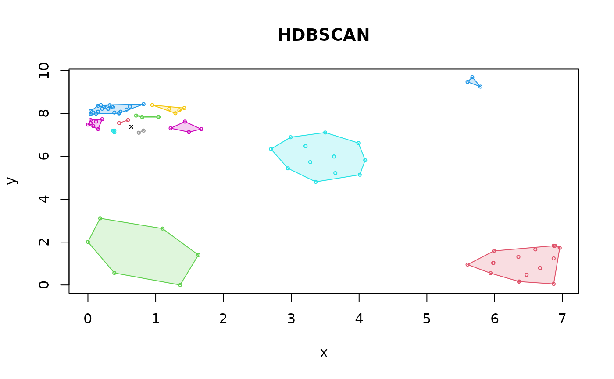
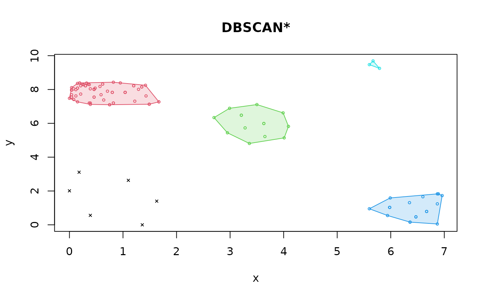
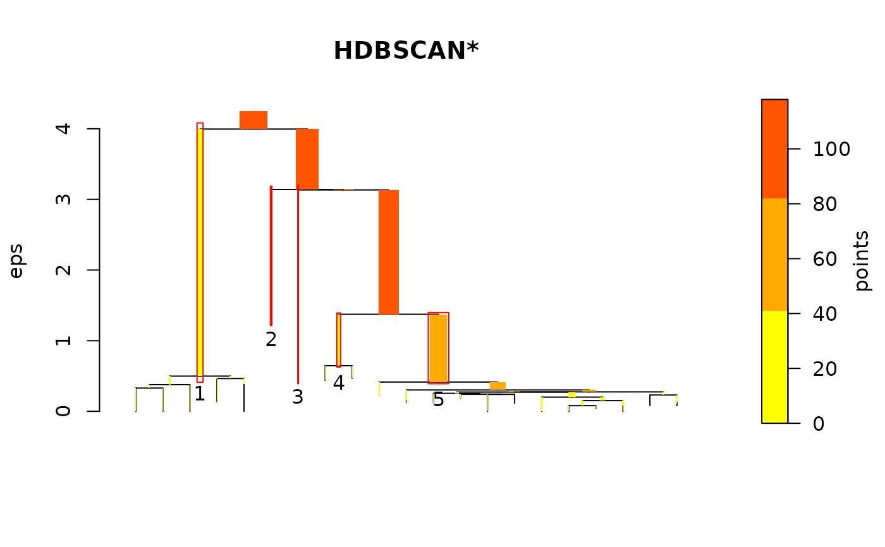
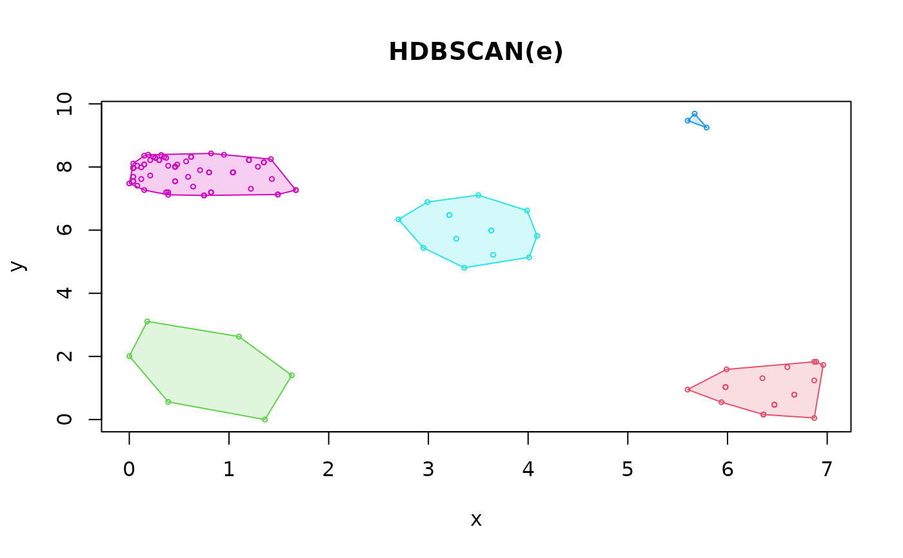
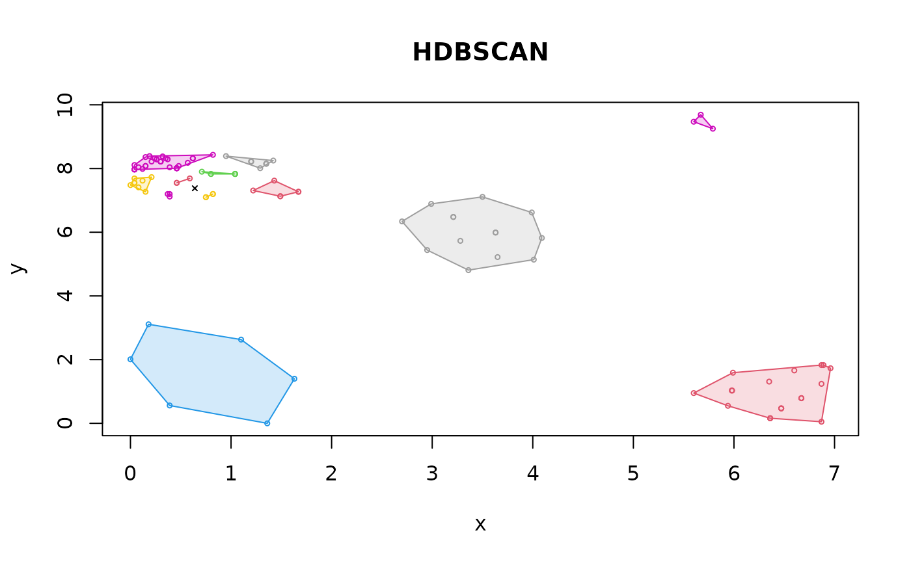

Fast C++ implementation of the HDBSCAN (Hierarchical DBSCAN) and its related algorithms.
Usage
hdbscan(
x,
minPts,
min_cluster_size = minPts,
cluster_selection_epsilon = 0,
gen_hdbscan_tree = FALSE,
gen_simplified_tree = FALSE,
verbose = FALSE
)
# S3 method for class 'hdbscan'
print(x, ...)
# S3 method for class 'hdbscan'
plot(
x,
scale = 1,
gradient = grDevices::hcl.colors(100, palette = "viridis"),
show_flat = FALSE,
main = "HDBSCAN*",
ylab = NULL,
leaflab = "none",
yscale = "eps",
colorbar = TRUE,
...
)
coredist(x, minPts, ...)
mrdist(x, minPts, coredist = NULL)
# S3 method for class 'hdbscan'
predict(object, newdata, data, ...)Arguments
- x
a data matrix (Euclidean distances are used) or a dist object calculated with an arbitrary distance metric.
- minPts
integer; Main parameter to control density estimate smoothing. For
mrdist()(andmst_mrdist()) it can be omitted ifcoredistis specified.- min_cluster_size
integer; The minimum clusters size used for stability calculation. HDBSCAN* uses
min_cluster_size=minPts, but it can be decoupled for better results. See Details Section.- cluster_selection_epsilon
double; a distance threshold below which no clusters should be selected (see Malzer & Baum 2020). The threshold is specified in mutual reachability distance (see
mrdist()). The default of 0.0 means this feature is not used.- gen_hdbscan_tree
logical; should the robust single linkage tree be explicitly computed (see cluster tree in Chaudhuri et al, 2010).
- gen_simplified_tree
logical; should the simplified hierarchy be explicitly computed (see Campello et al, 2013).
- verbose
report progress.
- ...
additional arguments are passed on.
- scale
numeric; factor used to scale the width of the bars in the condensed tree, which show the number of points in each cluster. The bar widths are multiplied by
scale(and divided by the number of clusters), so larger values draw wider bars. The default is 1.- gradient
the color palette for the cluster bars in the condensed tree. The default is the viridis palette. It can be a character vector with at least two colors, the name of a palette available in
grDevices::hcl.colors()(e.g.,"plasma"), or a function that takes the number of colors and returns a vector of colors (e.g., a palette created withgrDevices::colorRampPalette()). The colors are interpolated to a continuous ramp. The first color represents 0 points and the last color represents all points in the data set.- show_flat
logical; whether to draw boxes indicating the most stable clusters.
- main
Title of the plot.
- ylab
the label for the y axis. The default is the value of
yscale.- leaflab
a string specifying how leaves are labeled (see
stats::plot.dendrogram()).- yscale
character; what the y axis of the condensed tree shows:
"eps"(the default) shows the distance at which clusters split or lose points and"lambda"shows its inverse, \(\lambda = 1/\epsilon\).- colorbar
logical; show a color bar (legend) that maps the colors of the
gradientto the number of points in a cluster?- coredist
numeric vector with precomputed core distances (optional).
- object
clustering object.
- newdata
new data points for which the cluster membership should be predicted.
- data
the data set used to create the clustering object.
Value
hdbscan() returns object of class hdbscan with the following components:
- cluster
A integer vector with cluster assignments. Zero indicates noise points.
- minPts
value of the
minPtsparameter.- cluster_scores
The sum of the stability scores for each salient (flat) cluster. Corresponds to cluster IDs given the in
"cluster"element.- membership_prob
The probability or individual stability of a point within its clusters. Between 0 and 1.
- outlier_scores
The GLOSH outlier score of each point.
- coredist
The core distance of each data point (see
coredist()).- hc
An hclust object of the HDBSCAN hierarchy (the single-linkage hierarchy of the minimum spanning tree of the mutual reachability distances before condensing). It also stores the used
minPtsvalue and can be used as input forextractFOSC().- hdbscan_tree
A dendrogram of the hierarchy. Only present if
gen_hdbscan_tree = TRUE.- simplified_tree
A dendrogram of the simplified hierarchy. Only present if
gen_simplified_tree = TRUE.
coredist() returns a vector with the core distance for each data point.
mrdist() returns a dist object containing pairwise mutual reachability distances.
Details
This fast implementation of HDBSCAN (Campello et al., 2013) computes the hierarchical cluster tree representing density estimates along with the stability-based flat cluster extraction. HDBSCAN essentially computes the hierarchy of all DBSCAN* clusterings, and then uses a stability-based extraction method to find optimal cuts in the hierarchy, thus producing a flat solution. It uses Prim's algorithm and is memory efficient by avoiding to create a complete distance matrix.
The algorithm
The algorithm uses as the main parameter minPts which is used in several
of the HDBSCAN steps:
Compute mutual reachability distances from core distances. For core distances,
minPtsis a smoothing parameter for the density estimates; larger values forminPtsgive larger and smoother density estimates.Construct a minimum spanning tree from the mutual reachability distances.
Prune the tree using stability. Here
minPtscontrols the minimum cluster size because splits are only allowed when both branches have at leastminPtspoints.Extract the clusters from the pruned tree.
The individual steps are described in the following.
Core and mutual reachability distances
These can be calculated using the following two exposed functions:
coredist(): The core distance is defined for each point as the distance to the (minPts - 1)-th nearest neighbor. It produces a density estimate where larger values forminPtslead to larger and smoother estimates. The core distance is For matrix data, a fast k-d tree based on Euclidean distance is used. Additional parameters tocoredist()are passed on tokNNdist(). A core distance vector is returned.mrdist(): The mutual reachability distance is defined between two points asmrd(a, b) = max(coredist(a), coredist(b), dist(a, b)). It has the effect of increasing distances in low density areas, separating clusters better.
To use non-Euclidean distances, the call hdbscan(), coredist(),
or mrdist() with a precomputed distance matrix.
Minimum spanning tree construction
mst_dist() constructs a MST from a data from the mutual
reachability distance matrix. Since distance matrices
are of size \(O(n^2)\) and thus can become very large,
mst_mrdist() is also provides which directly constructs the MST from
matrix data without creating the full distance matrix.
This reduces memory complexity
\(O(d n)\) and speeds up the calculation, but
only works with Euclidean distances.
Tree pruning and cluster selection
The MST is pruned using stability and clusters are extracted
in the unsupervised version implemented in extractFOSC().
Stability is the excess-of-mass measure defined for HDBSCAN*.
In the cluster tree, a child cluster replaces its parent only if the
children's combined stability is larger than the parent's, so
long-lived, high-mass clusters are favored.
The original HDBSCAN algorithm uses one minPts value sets both the density
smoothing and the minimum
cluster size.
The user can specify a different cluster size via min_cluster_size
or call extractFOSC() with the new minPts,
e.g., extractFOSC(res, minPts = 20). This keeps the
density estimates using the original minPts and the hierarchy of res,
but recomputed stability and cluster extraction using the new minPts value
for the minimum cluster size.
HDBSCAN* and DBSCAN*
Campello, Moulavi, and Sander (2013) introduced DBSCAN* and HDBSCAN*
and demonstrated that for a fixed minimum points parameter minPts,
the HDBSCAN* hierarchy encodes a one-to-one correspondence with the complete
set of flat clusterings obtainable by DBSCAN* across every possible radius
eps.
Malzer and Baum (2020) describe that
a combination between DBSCAN* and HDBSCAN* can be achieved
by using a cluster_selection_epsilon greater than 0.0.
The tree below cluster_selection_epsilon produces
a result identical to DBSCAN* with eps = cluster_selection_epsilon.
The remaining part (on levels above the threshold) is still
processed by HDBSCAN*'s stability-based selection algorithm
and can therefore return clusters of variable densities.
Note that there is not always a remaining part, especially if
the parameter value is chosen too large, or if there aren't
enough clusters of variable densities. In this case, the result
will be equal to DBSCAN*.
cluster_selection_epsilon is especially useful for cases
where HDBSCAN* produces too many small clusters that
need to be merged, while still being able to extract clusters
of variable densities at higher levels.
Condensed tree plot
plot() draws the condensed tree: the simplified cluster hierarchy as a
dendrogram where each cluster is drawn as a shaded bar.
Width shows the number of points that are still in the cluster at that height. A bar is widest where the cluster is born and gets narrower as points leave the cluster as noise or split off into child clusters. The widths can be rescaled with
scale.Color shows the same number as the width: the number of points in the cluster at that height. The colors are picked continuously from the
gradient(first color for 0 points, last color for all points in the data set), so the color of a bar changes along the bar as points leave the cluster. A color bar at the right side of the plot (colorbar = TRUE) maps the colors to the number of points.The y-axis shows the distance
eps(mutual reachability distance) at which clusters split or lose points, or withyscale = "lambda", its inverse \(\lambda = 1/\epsilon\). Larger \(\lambda\) values mean higher density.
Cluster membership prediction for new points
predict()assigns each new data point to the same cluster as the nearest point if it is not more than that points core distance away. Otherwise the new point is classified as a noise point (i.e., cluster ID 0).
Related Methods
extractFOSC()implements a more general framework for clusters selection from hierarchies (i.e., dendrograms) In addition to HDBSCAN's unsupervised cluster extraction, it also provides semisupervised methods with cluster constraints.glosh()implements the GLOSH outlier score.
References
Campello RJGB, Moulavi D, Sander J (2013). Density-Based Clustering Based on Hierarchical Density Estimates. Proceedings of the 17th Pacific-Asia Conference on Knowledge Discovery in Databases, PAKDD 2013, Lecture Notes in Computer Science 7819, p. 160. doi:10.1007/978-3-642-37456-2_14
Campello RJGB, Moulavi D, Zimek A, Sander J (2015). Hierarchical density estimates for data clustering, visualization, and outlier detection. ACM Transactions on Knowledge Discovery from Data (TKDD), 10(5):1-51. doi:10.1145/2733381
Malzer, C., & Baum, M. (2020). A Hybrid Approach To Hierarchical Density-based Cluster Selection. In 2020 IEEE International Conference on Multisensor Fusion and Integration for Intelligent Systems (MFI), pp. 223-228. doi:10.1109/MFI49285.2020.9235263
See also
Other HDBSCAN functions:
extractFOSC(),
glosh(),
mst_dist()
Other clustering functions:
dbscan(),
extractFOSC(),
jpclust(),
ncluster(),
optics(),
sNNclust()
Examples
## cluster the moons data set with HDBSCAN
data(moons)
res <- hdbscan(moons, minPts = 5)
res
#> HDBSCAN clustering for 100 objects.
#> Parameters: minPts = 5
#> The clustering contains 3 cluster(s) and 0 noise points.
#>
#> 1 2 3
#> 25 25 50
#>
#> Available fields: cluster, minPts, coredist, cluster_scores,
#> membership_prob, outlier_scores, hc
plot(res)

clplot(moons, res)

## cluster the moons data set with HDBSCAN using Manhattan distances
res <- hdbscan(dist(moons, method = "manhattan"), minPts = 5)
plot(res)

clplot(moons, res)

## Example for HDBSCAN(e) using cluster_selection_epsilon
# data with clusters of various densities (Malzer and Baum, 2020).
data(epsilon_data)
## HDBSCAN splits one cluster
hdb <- hdbscan(epsilon_data, minPts = 3)
plot(hdb, show_flat = TRUE)

hullplot(epsilon_data, hdb, main = "HDBSCAN")
#> Warning: Not enough colors. Some colors will be reused.

## DBSCAN* marks the least dense cluster as outliers
db <- dbscan(epsilon_data, eps = 1, minPts = 3, borderPoints = FALSE)
hullplot(epsilon_data, db, main = "DBSCAN*")

## HDBSCAN(e) mixes HDBSCAN AND DBSCAN* to find all clusters
hdbe <- hdbscan(epsilon_data, minPts = 3, cluster_selection_epsilon = 1)
plot(hdbe, show_flat = TRUE)

hullplot(epsilon_data, hdbe, main = "HDBSCAN(e)")

## Manually perform the steps of HDBSCAN
d <- mrdist(epsilon_data, minPts = 3)
mst_hc <- mst_dist(d)
cl <- extractFOSC(mst_hc)
hullplot(epsilon_data, cl$cluster, main = "HDBSCAN")
#> Warning: Not enough colors. Some colors will be reused.
